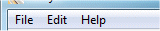
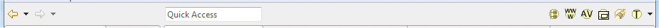
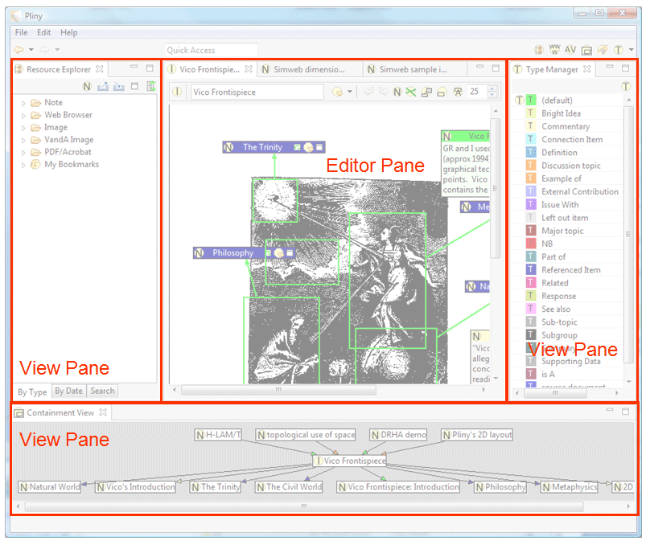

Pliny can operate both as a standalone application, and as a
plugin to a fuller version of Eclipse. Much of the operation is the same
in both cases, but there are differences in aspects of the screen layout since
elements on the screen when Pliny is run within a full version of
Eclipse will have many non-Pliny elements supporting the other "non-Pliny"
things that other plugins in a full Eclipse allow you to do. In this section,
however, we will show the screen as it looks when Pliny is run
standalone. In many other examples within these documents, however, you may see
screen shots taken when Pliny is run within a full version of
Eclipse.
The basic screen layout for Pliny as shown when run standalone on
a Windows machine (see topic later on this page about how it looks on the
Macintosh) is shown below:

Pliny operates as a part of Eclipse, and certain aspects of the screen
layout have to do with the way that Eclipse deals with the screen:
-
Menu Bar: The top area of the screen/Eclipse window contains
a conventional menu bar. On a Windows machine it looks like this:

(On the Macintosh, eclipse shows its menu bar at the very top of
the screen, as is normal for applications on the Macintosh). You use the menu
bar in the same way that you use it on other programs you are familiar with --
select an menu with the mouse and then select an item from the drop-down menu
that results. The menu here provides a relatively standard set of functions,
including, under the File menu, the Exit command which ends
Pliny.
- Toolbar: Directly below the menu area one sees a row of icons
split, left and right, into two groups. This area near the top of Pliny's
window is called in Eclipse-talk the "Toolbar". It looks like this:

A tool bar provides a set of icons that, when clicked on, carry out
actions for you. There is more information about toolbars
here.
- Panes: The large central area of the screen and directly below
the toolbar is the principal display area of Eclipse and Pliny. In the screen
above it is divided into two panes -- a relatively narrow one to the
right, and the larger area to the left. In the figure above the narrow left
panel contains Pliny's Resource Explorer view -- you can see Eclipse
trying to show you this name as "Resource Explo..." in the tab area; the
top left corner; of the view's panel. The larger left area is what Eclipse
considers its editor pane and we can see there an image of the
frontispiece of Vico's New Science with various annotations added to it.
Often in computing one equates "editor" with "text editor", although as you can
see here, Pliny's editors often provide facilities other than those needed
simply to edit text. In general, the editor pane provides access to things that
are in Pliny called resources.
- Editor Pane: In Eclipse, and therefore in Pliny as well, the
editor pane can hold more than one open resource.
- Tabs: At the top of the editor page is a set of tabs that
identify what resources are currently open there. The tabs contain an icon that
indicates the kind of resource it is, and its name. There are three tabs
showing, so three Pliny resources are open, with names "Vico Frontispiece",
"Simweb dimension 1 outliers" and "Simweb sample image: Intro". The tab in
white belongs to the item currently displaying on the screen -- in this case
the materials for the "Vico Frontispiece" resource. Note that the first
resource tab shows an
 icon, and
the following two tabs show a
icon, and
the following two tabs show a  icon. This reflects that fact that the first tab is attached to the display of
Image resources, and the other two tabs are for a Note resource. The
significance of the kinds of resources will be explained later.
icon. This reflects that fact that the first tab is attached to the display of
Image resources, and the other two tabs are for a Note resource. The
significance of the kinds of resources will be explained later.
- You can close any of the open resources (removing it from
the set of currently open resources) by clicking on the X showing in the tab to
the right of the resource name "Vico Frontespiece".
- Knowing how to manage the contents of panes and how they are
displayed on the screen is essential to the effective use of Eclipse in
general, and Pliny in particular. The section Managing
Panes provides more detailed information about this.
- Perspective: In Eclipse a particular layout of panels is
called in a perspective, and the name of the perspective we are seeing
here is the Pliny perspective. If you are running Pliny not as a
standalone program but instead within a mix of other applications within
Eclipse you will probably find that Eclipse provides you with a number of
different screen layouts -- each one designed for a specific type of task or
application. In the standalone version only the Pliny perspective is available
and there is no need to show you what perspective is active. However, in the
full version of Eclipse the currently active perspective is named in the upper
right corner of the screen.
- The border between the two panes can be moved by you. To do so place
the mouse pointer in the strip that separates the two panes. The mouse pointer
should change to "
 ". You can now, by holding down the main
mouse button, drag the boundary to the right or the left.
". You can now, by holding down the main
mouse button, drag the boundary to the right or the left.
Views and Editors
Eclipse supports two kinds of displays that appear in panes:
views and editors. Thus, each of Pliny's major user components is
classified as either a view or an editor as well. Although the distinction
between view and editor is often relevant for traditional Eclipse applications,
it is less comfortable within Pliny itself. However, there are some differences
between how views and editors behave that is useful to understand, and in this
section we will describe the difference:
- Editors: Eclipse is designed in such a way that for the user
an editor is meant to be the centre of focus when work is being done. Eclipse
will allow you to operate more than one annotator/editor at a time (perhaps
each one open to different things), but they all must be displayed in Eclipse's
editor pane, which usually takes up most of the screen.
In the context of Pliny, the idea that the editors are the centre
of focus for work is preserved. Pliny is a tool for creating and managing notes
and annotation. It is this activity that is the centre of the user's attention
when s/he is using Pliny. Thus, various tools that allow you to create and
manage notes and annotations are all created as Eclipse editors. These are
Pliny's Note Editor, the embedded
Web Browser, and the
Image- and PDF annotators. Note that although these are all
editors from Eclipse's perspective, only the Note Editor actually has the word
"editor" in its name.
Furthermore, although all editors must share a single pane,
several instances of any particular editor may be open at the same time, and
each instance is distinguished by its Tab. Thus, if 3 different notes and 2
images are open at a point in a Pliny session, all of them must appear in the
editor pane. If there is horizontal space to show them all, five tabs will
appear at the top of the editor pane, three of them referring to the three
Pliny notes and two to two Pliny-managed images.
- Views: In Eclipse a view supports the central work that goes
on in the Editor with various kinds of supplementary services. Views may be
spread between one or more panes (never in the editor pane), and usually the
view panes are arranged around the central editor pane. Pliny's views are the
the Resource Explorer,
Containment View,
Resource Holder View,
Note Search View,
Type Manager View and the
Annotation View.
Although views may be spread between several panes, only one
instance of any particular Pliny view may be open at a time -- there cannot be
two instances of the Resource Explorer available at one time, for
example.
Eclipse normally defines a particular relationship between an editor
or view and the pane in which it appears on the screen, and this rule derives
from the uniqueness of the editor pane: All editors must share the editor pane,
and there may only be one editor pane, whereas a set of views may be
distributed between a number of separate panes. Thus, it is important to
remember that although separate editors must be stacked into a single pane --
the editor pane -- and the views may also be stacked into a single pane (or
more than one), an editor and a view cannot share a single pane -- all the
editors must appear in the single editor pane, and the views must appear in one
or more view panes.
The following illustration (which shows Pliny at a point where several
editors and views are open at the same time) illustrates some aspects of the
relationships between panes and editors/view. The panes have been identified
within the illustration by surrounding them with orange borders, and attaching
an orange label to them. Of course, these orange labels and boxes would not be
displayed by Pliny itself:

Points to observe about this figure:
- First, although the Pliny window will always have an Editor Pane,
it needn't always have any View Panes. The Editor Pane will take up whatever
space is not occupied by the View Panes. Here we see three View Panes, however
when you start up Pliny for the first time you will at first see only one View
Pane (to the left of the Editor Pane area), and even this can be closed and
removed from the screen if you wish. The section Managing Panes tells you how to get more than one View
Pane operating if you wish.
- Editor Pane: Note first the editor pane (which is shown here
as surrounded on three sides by view panes) contains three open editors -- you
can see their three tabs at the top of the editor pane. The editor pane has
open editors for Vico Frontispiece, Sibweb dimension... and
Simweb sample i.... At the time this screen image was taken Vico
Frontispiece was currently at the front of the stack of open editors, so
only its display is visible in the editor pane.
- View Panes: Surrounding the editor pane on three sides are
three view panes. The top left view pane is displaying the Resource
Explorer view, the top right pane displays the Type Manager view,
and the bottom pane displays the Containment view. You can see their
names in the tabs area showing at the top of each view Pane area. We will see
in the section Managing Panes that the spatial
relationship between the view panes and the editor pane can be altered by
dragging and dropping them -- indeed, two views can share the same pane, but
when the screen looks like it does above one cannot open more than the one
instance of, say, the Resource Explorer since at this time it is already
displaying.
Now that you have seen the main layout of the screen and been
introduced to editors and views, go to the Toolbar section to read more about the toolbars, or
the Managing Panes section to find out more about
how to manage Pliny panes.